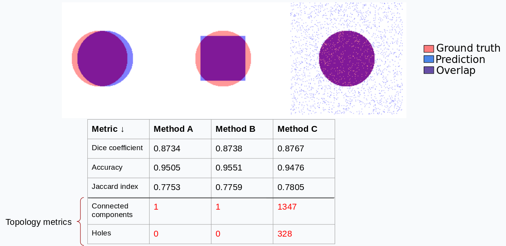
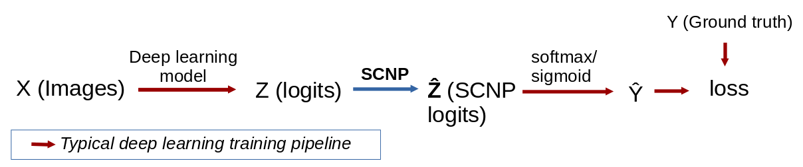
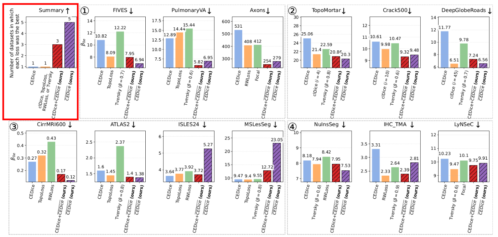
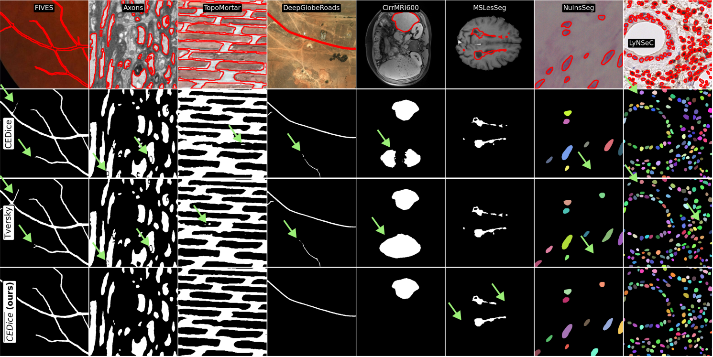
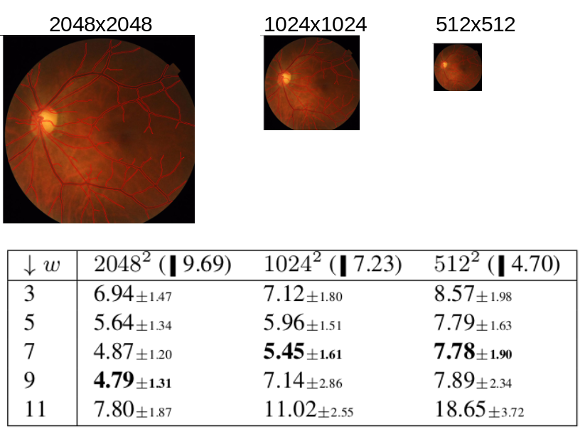
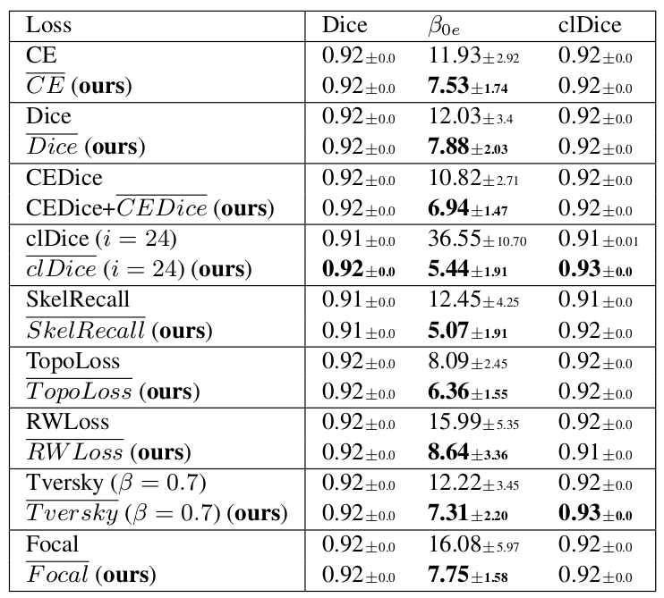

Towards High-Quality Image Segmentation: Improving Topology Accuracy by Penalizing Neighbor Pixels
Image segmentation quality and Topology accuracy
In image segmentation, performance is typically measured with pixel-level metrics, like Dice coefficient and accuracy. However, these metrics alone tell very little about image segmentation quality. Topology accuracy (i.e., the accuracy in the number of connected components and holes between the prediction and the ground truth) is a good indicator of image segmentation quality, particularly when the downstream tasks rely on precise counts of objects or structures and their connectivity. For example, the connectivity of the roads in satellite images or in blood vessels is more important than their accuracy at the border.
 |
SCNP — Same Class Neighbor Penalization
We propose SCNP, a method to improve topology accuracy that is fast, efficient, works with any kind of structures, and it's easy to use and incorporate into existing training pipelines. SCNP is applied to the logits, allowing you to use your favorite architecture, optimization strategy, data augmentation, and loss function. In practice, this means that you only need to add a few (three) lines to your code to use SCNP.
 |
How does SCNP work?
Effect on the loss and the gradients
SCNP has three main effects on the loss and the gradients.
Implementation
SCNP consists of three lines of code that need to be executed only during training:
logits = model(X)
# MinPooling in the foreground
t1 = -torch.nn.functional.max_pool2d(-(logits*y_onehot+9999*(1-y_onehot)), kernel_size=3, stride=1, padding=1)
# MaxPooling in the background
t2 = torch.nn.functional.max_pool2d((logits*(1-y_onehot)-9999*y_onehot), kernel_size=3, stride=1, padding=1)
z_tilde = t1*y_onehot + t2*(1-y_onehot)
loss = YourFavouriteLoss(SoftmaxOrSigmoid(z_tilde), Y)
Experiments and results
We conducted 1) a benchmark across 13 datasets comparing 5-7 loss functions vs. Cross Entropy Dice loss with our SCNP; 2) a sensitivity analysis on SCNP's only hyper-parameter (neighborhood size); and 3) an ablation study comparing nine loss functions with and without SCNP. Each experiment was run with five different random seeds. In the benchmark, we employed medical and non-medical datasets, datasets with tubular and non-tubular structures, semantic and instance, binary and multi-class segmentation tasks, and three state-of-the-art DL frameworks (nnUNetv2, Detectron2, InstanSeg).

SCNP improved topology accuracy without deteriorating Dice coefficient.

Qualitative results.

Our sensitivity analysis indicates that the optimal neighborhood size of SCNP is correlated with the structure size.

Our ablation study demonstrates that SCNP improves topology accuracy with different (topology and non-topology) loss functions.
Learn more
Read our paper to learn more about:
- Topology loss functions.
- SCNP gradients.
- SCNP's limitation on datasets with extremely small structures (ISLES24 and MSLesSeg datasets).
- Complete description of the datasets and setup used in our experiments.
- SCNP's performance compared to simple dilation/erosion.
- Extra computational resources required by SCNP (in the order of ms and GPU's MiB).
BibTeX
@article{valverde2026scnp,
title={Towards High-Quality Image Segmentation: Improving Topology Accuracy by Penalizing Neighbor Pixels},
author={Valverde, Juan Miguel and Papadopoulos, Dim and Larsen, Rasmus and Dahl, Anders},
journal={Proceedings of the IEEE/CVF conference on Computer Vision and Pattern Recognition},
pages={XX--YY},
year={2026},
url={https://jmlipman.github.io/SCNP-SameClassNeighborPenalization}
}